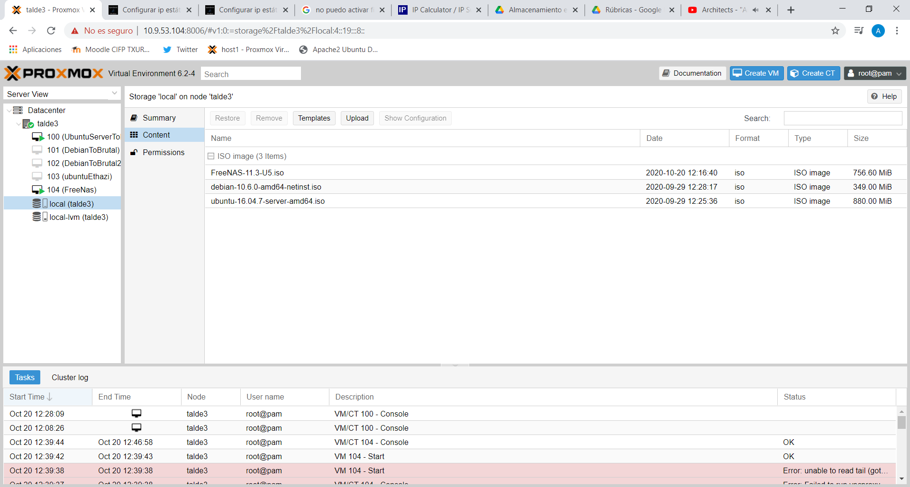

Free Nas
INSTALAZIOA PROXMOXEAN
1. ISO-a behin deskargatu ostean, “upload” botoia sakatuko dugu eta ISO-a aurkeratuko dugu. ADI! Prozesu hau minutu batzuk hartu ditzake.
2. Kargatzen denean, MV bat sortuko dugu ISO horrekin.
3. BIOS-era sartu, eta sistema boot-device-a FreeNAS-ekoa aukeratu egingo dugu.
4. Sistema berrabiarazi.
5. FreeNAS-eko instalazio menua pantailan agerraraztean lehenengo aukera (1) aukeratuko dugu instalazioa hasteko.
6. Kontsolako ‘Setup menu’-a kargatzen zaigunean, Install/Upgrade aukeratu.
7. urrengo menuan FreeNAS erabiltzeko ze drive erabiliko den aukeratzeko eskatuko digute. Hemen boot device-a aukeratuko dugu, kontuz, ez “storage disk”-a. Orokorrean boot device-a storagekoa baino tamaina txikiagoa izango du. Nabigatzeko Aukeratzeko espazio barra sakatu. Ondoren OK sakatu.
8. Ondorengo pantailan, “Yes” sakatu instalazioarekin jarraitu ahal izateko.
9. Jarraian FreeNAS-era sartzeko erabiliko dugun pasahitza sartzeko eskatuko digute.
10. FreeNAS Boot Mode menu pantailarekin topatzen garenean Boot via BIOS aukeratuko dugu (orokorrean ‘motherboard’ guztiekin funtzionatzen baitu eta Hardware zaharragoarekin be).
11. Gure instalazioa hasiko da, eta minutu gutxi batzuk beharko ditu hau bukatzeko.
12. OK sakatu sistema berrabiarazteko eta gero instalazioa egiteko erabili dugun diska edo USB-a kenduko dugu. Adi, sistemak bi aldiz galdetu egingo dizu diska edo USB-a kendu izan duzun edo ez.
13. Sistema berrabiaraziko da Boot device-tik.
14. FreeNAS kargatzen den lehen aldia denez, mezuak agertuko dira pantaila osoan zehar kargatzen den bitartean.
15. Amaitzen denean Console Setup-arekin topatuko gara IP helbide batekin batera (azken hau 0.0.0.0. baldin bada, interneteko kablea konektatuta dagoela eta DHPC zerbitzari bat duela ziurtatu).
16. Orain beste ordenagailu batean web-arakatzailearen bilatzailean IP helbide hori bilatuko dugu, eta jarraian FreeNAS-eko login menuarekin topatu beharko ginen. “root” erabiltzeailearekin logueatu goiko pausu batean sartu duzun pasahitzarekin.
17. LISTO! FreesNAS instalatu berri duzu.
